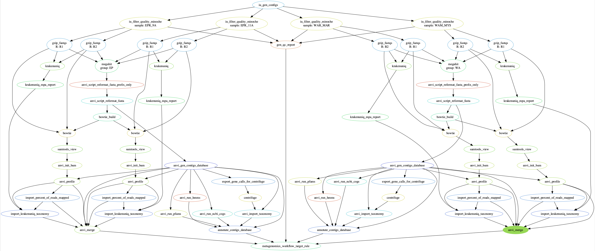

library(DiagrammeR)
library(htmlwidgets)
library(DiagrammeRsvg)
library(rsvg)
my_graphviz <- grViz("
digraph boxes_and_circles {
# add node statements
node [shape = circle]
A; B; C; D; E; F
node [shape = box]
1; 2; 3; 4; 5; 6; 7[label = 'stuff']; 8[label = 'stuff']
# Add edge statements
A->1; B->2; B->3; B->4; C->A;
1->D; E->A; 2->4; 1->5; 1->F;
E->6; 4->6; 5->7; 6->7;
}
")
{{< figure library=“true” src=“dag.png” title=“A caption” lightbox=“true” >}}
{{ figure src=“dag.png” title=“A caption” lightbox=“true” }}
alternative text for search engines